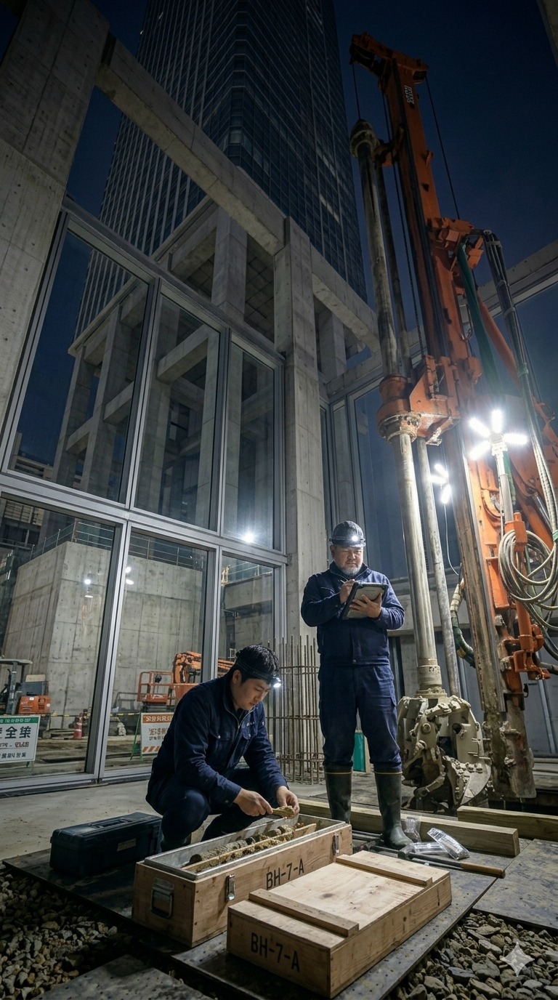
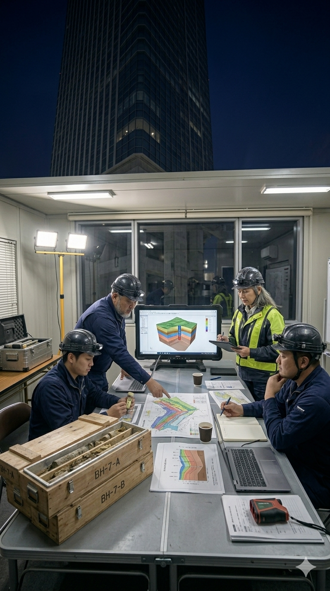
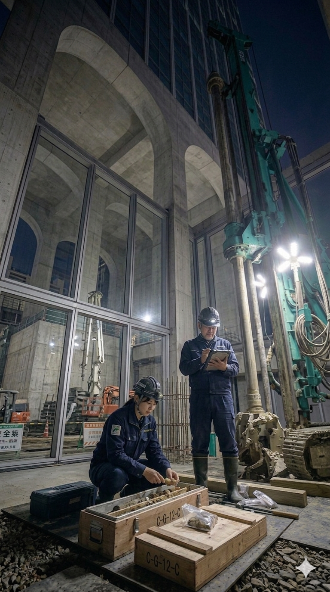

事業内容BUSINESS

高度な地質調査と土木技術
夜間の現場でも妥協のない精度を追求。コア採取や地層分析を通じ、建物を支える「地中」の真実を明らかにします。正確なデータに基づいた施工こそが、安全な街づくりの第一歩です。

現場の「和」を重んじる管理体制
施工管理とは、ただ図面を見るだけではありません。現場で働く一人ひとりと対話し、最新のITツールを活用しながら、円滑かつ安全にプロジェクトを導きます。チームの結束が品質を生みます。

都市部における機動力
屋内の限られたスペースや夜間工事など、特殊な環境下でも迅速に対応。周辺環境への配慮と高度な技術を両立し、お客様の多様なニーズに応える機動力こそが当社の強みです。